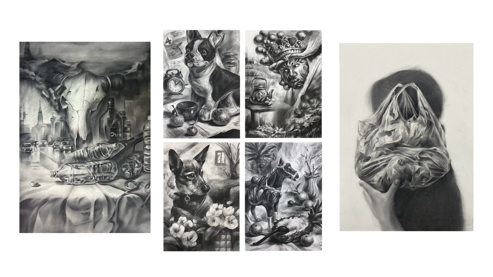
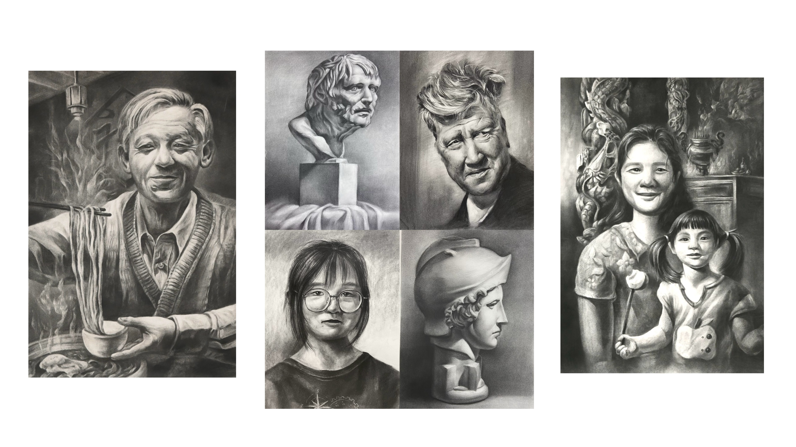
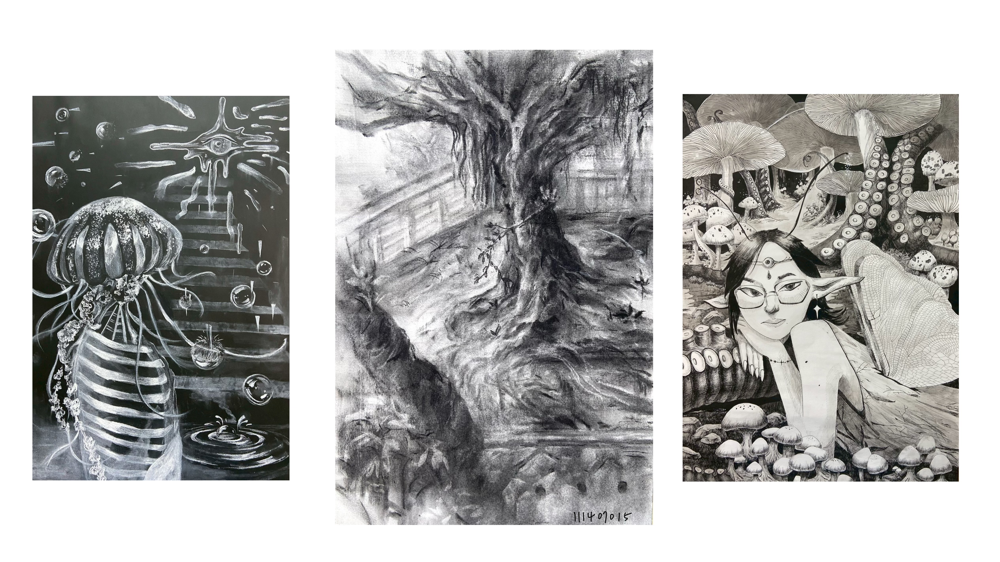
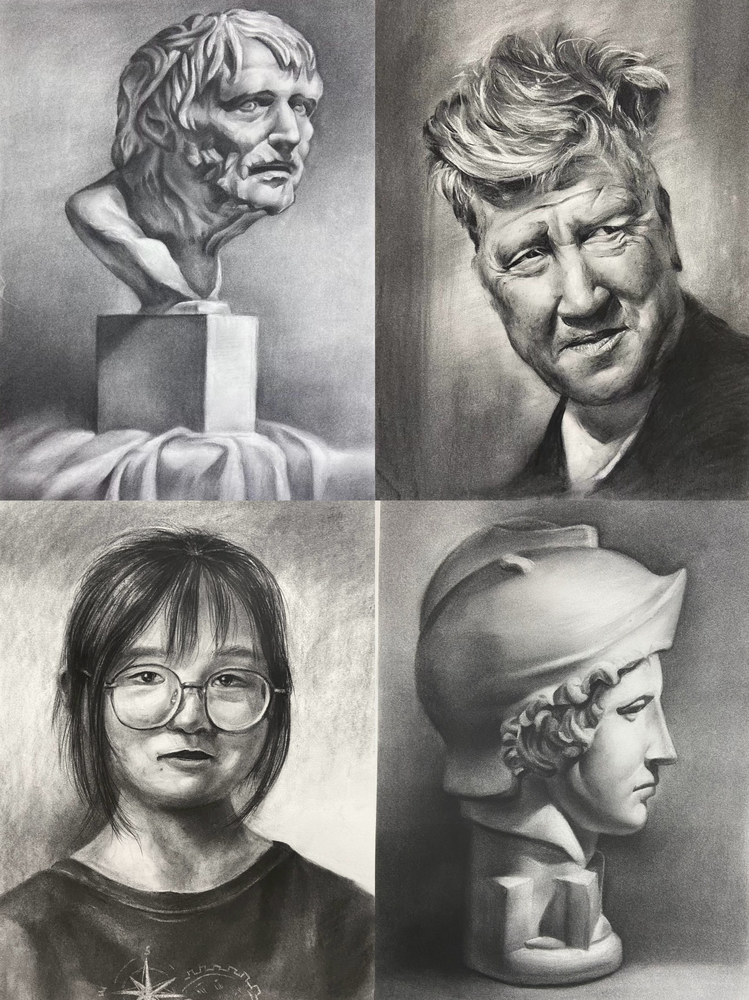
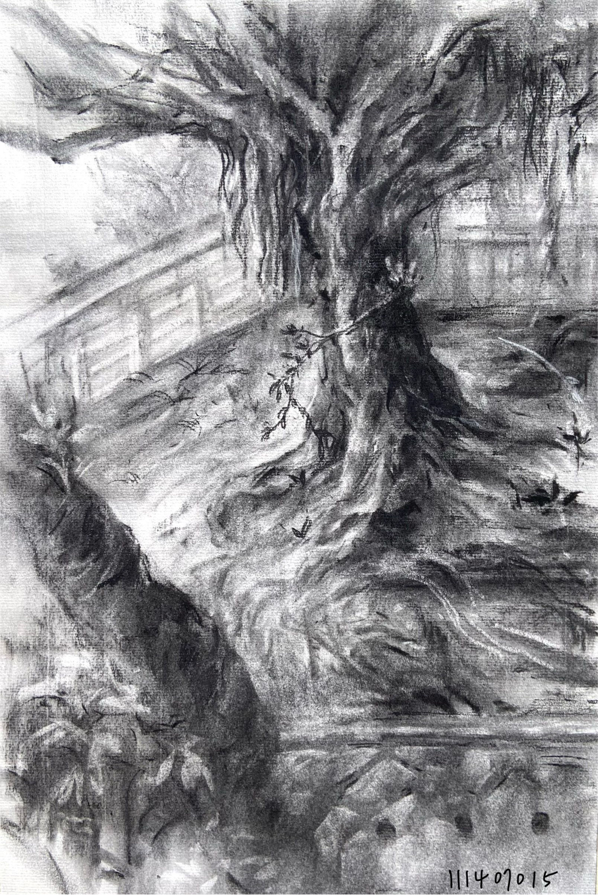
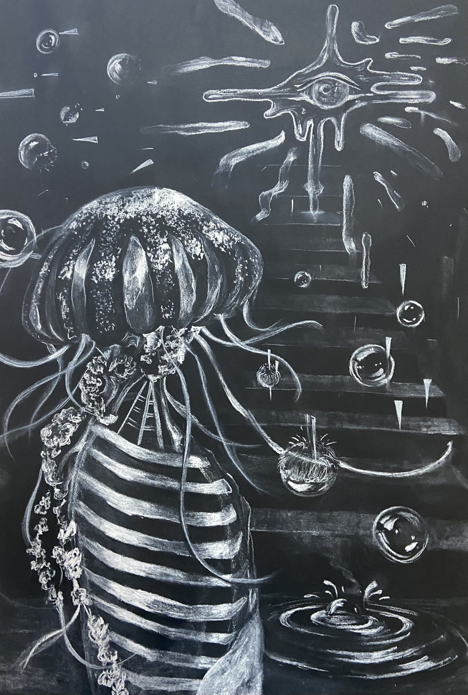
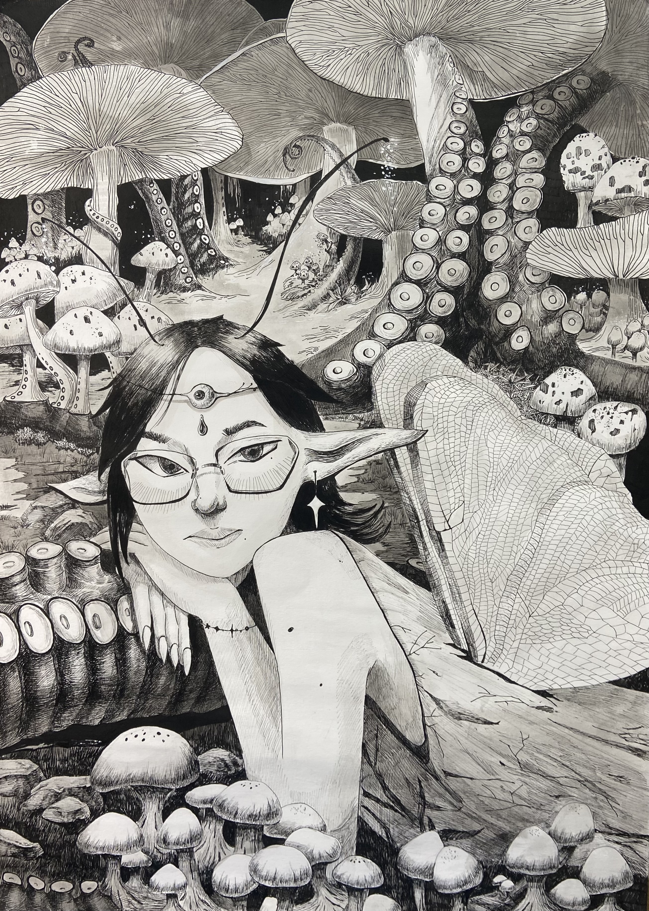

<!DOCTYPE html>
<html lang="zh-Hant"></html>
<head>
<title>素描作品 sketch works
</title>
<meta charset="UTF-8">
<meta name="viewport" content="width=device-width, initial-scale=1">
<link rel="stylesheet" href="https://www.w3schools.com/w3css/5/w3.css">
<style>
body {font-family: "Times New Roman", Georgia, Serif;}
h1, h2, h3, h4, h5, h6 {
  font-family: "Playfair Display";
  letter-spacing: 5px;
}
/* Extend the width of the footer button */
.footer-button {
    display: block;
    width: 100vw; /* Full viewport width */
    margin-left: calc(-50vw + 50%); /* Center and extend to edges */
    text-align: center;
    padding: 10px 0;
    background-color: #debcb1; /* Updated to match rectangle color */
  }

  /* Ensure the footer is a full-width rectangle */
  footer {
    width: 100vw; /* Full viewport width */
    margin-left: calc(-50vw + 50%); /* Center and extend to edges */
    background-color: #debcb1; /* Updated to match rectangle color */
    padding: 20px 0; /* Ensure consistent padding */
  }

  .footer-button {
    text-align: center;
    color: #000; /* Adjust text color if needed */
    text-decoration: none;
  }

  /* Add background color to the '看更多' button */
  .more-button {
    background-color: #d2b48c; /* Light brown color */
    color: #000; /* Black text color */
    padding: 10px 20px;
    border-radius: 5px;
    text-decoration: none;
    display: inline-block;
  }

  .more-button:hover {
    background-color: #c2a378; /* Slightly darker brown on hover */
  }

  /* Remove gray overlay from images */
  .w3-opacity-min {
    opacity: 1 !important; /* Ensure full opacity */
  }

  /* Carousel styles */
  .carousel {
    width: 100vw; /* Full viewport width */
    margin: 0 auto; /* Center the carousel */
    overflow: hidden;
  }

  .carousel img {
    width: 100%; /* Ensure images fit within the carousel */
    height: auto; /* Maintain aspect ratio */
    display: block;
  }

  /* Rectangle block styles */
  .rectangle-block {
    width: 100vw; /* Full viewport width */
    margin-left: calc(-50vw + 50%); /* Center and extend to edges */
    height: 100px; /* Fixed height */
    background-color: #debcb1; /* Updated color */
  }
</style>
</head>
<body>

<!-- Navbar (sit on top) -->
<div class="w3-top">
  <div class="w3-bar w3-white w3-padding w3-card" style="letter-spacing:4px;">
    <a href="#home" class="w3-bar-item w3-button">素描作品 sketch works
</a>
    <!-- Right-sided navbar links. Hide them on small screens -->
    <div class="w3-right w3-hide-small">
      
    </div>
  </div>
</div>

<!-- Header -->
<header class="w3-display-container w3-content w3-wide" style="max-width:1600px;min-width:500px" id="home">
  
  <div class="w3-display-bottomleft w3-padding-large w3-opacity">
    <h1 class="w3-xxlarge">立體造型作品集</h1>
  </div>
</header>

<!-- Carousel -->
<div class="carousel">
  <div class="w3-content w3-display-container">
    
    
    

    <button class="w3-button w3-display-left" onclick="plusDivs(-1)">&#10094;</button>
    <button class="w3-button w3-display-right" onclick="plusDivs(1)">&#10095;</button>
  </div>
</div>

<script>
  var slideIndex = 1;
  showDivs(slideIndex);

  function plusDivs(n) {
    showDivs(slideIndex += n);
  }

  function showDivs(n) {
    var i;
    var x = document.getElementsByClassName("mySlides");
    if (n > x.length) {slideIndex = 1}
    if (n < 1) {slideIndex = x.length}
    for (i = 0; i < x.length; i++) {
      x[i].style.display = "none";  
    }
    x[slideIndex-1].style.display = "block";  
  }
</script>

<!-- Rectangle block below carousel -->
<div class="rectangle-block"></div>

<!-- Page content -->
<div class="w3-content" style="max-width:1100px">

  <!-- About Section -->
  <div class="w3-row w3-padding-64" id="about">
    <div class="w3-col m6 w3-padding-large w3-hide-small">
     
    </div>

    <div class="w3-col m6 w3-padding-large">
      </h1><br>
      <h5 class="w3-center">石膏像與人像素描<br>2023~2025/碳筆</h5>
      <p class="w3-large"> </p> 
      <p class="w3-large w3-text-grey w3-hide-medium"><br>石膏像與人物寫實素描，展現素描人像基本功。

</p>
    </div>
  </div>

  <!-- About Section -->
  <div class="w3-row w3-padding-64" id="about">
    <div class="w3-col m6 w3-padding-large w3-hide-small">
     
    </div>

    <div class="w3-col m6 w3-padding-large">
      <h5 class="w3-center">〈寫生─寶藏嚴一隅〉<br>2025/碳筆/27.3 x 39.4cm</h5>
      <p class="w3-large"> </p> 
      <p class="w3-large w3-text-grey w3-hide-medium"><br> 畫面呈現了寫生當下的燥熱，筆觸寫意。我認為寫生就是走進自然，捕捉自然的行為，因此在眾多媒材中我選擇最原始碳筆來做畫，原因是碳筆源自於柳木、藤枝等木材，是最接近自然的媒材。</p>
    </div>
  </div>

   <!-- About Section -->
  <div class="w3-row w3-padding-64" id="about">
    <div class="w3-col m6 w3-padding-large w3-hide-small">
     
    </div>

    <div class="w3-col m6 w3-padding-large">
      <h5 class="w3-center">〈性別之眼〉<br>2025/白色粉彩筆/54.6 x78.7 cm</h5>
      <p class="w3-large"> </p> 
      <p class="w3-large w3-text-grey w3-hide-medium"><br> 在社群媒體上，常會看到有人用「開了性別之眼」來形容一個人有了性別意識。這個名詞源於宗教與靈修術語「開天眼」，是指人通過修煉開發額頭的第三隻眼，獲得超越肉眼限制的超感知力，能看見常人不能見的景象。而開「性別之眼」的前提則是在父權社會中，無論你的生理性別為何，人的原廠設定就是厭女的，需要通過人主動去發現、打開，才會發現這世界奇怪的運轉機制。
  <br><br>而我創造的流行公仔，以去除肉身僅有骨頭的形式出現是為了避免觀者帶入任何一個性別，要知道任何性別都會厭女，包括女性，而我用水母作為象徵，表達無腦的人類受性別之眼之神的刺激後，意識到原本世界的美好的世界皆為泡影，我也覺得氣泡破掉的瞬間彷彿長出如同水母的生物，利用水母無腦但能生存、傷害人的觀念貫穿畫面。
<br><br>
    </div>
  </div>

   <!-- About Section -->
  <div class="w3-row w3-padding-64" id="about">
    <div class="w3-col m6 w3-padding-large w3-hide-small">
     
    </div>

    <div class="w3-col m6 w3-padding-large">
      <h5 class="w3-center">〈仙女環〉<br>代針筆/54.6 x 78.7 cm</h5>
      <p class="w3-large"> </p> 
      <p class="w3-large w3-text-grey w3-hide-medium"><br>仙女環傳說源於歐洲，描述草地上出現的蘑菇圈是精靈在月光下狂歡留下的痕跡，是通往仙界的路入口活超自然力量的象徵，但進入仙女環可能被傳送或遭受厄運。<br><br>
我將自己化為剛狂歡完的精靈，在仙女環後靜靜等待人類闖入，頭上戴著的裝飾也連接到上一張畫的性別之眼，帶著審判的意味看著闖入的人會被傳送到哪裡，章魚觸角和毒蘑菇都有著毒的意象，被精靈審判不合格的人類會被章魚觸角捲起，嘴裡塞滿毒蘑菇，接著被捲進沼澤。
<br><br>
    </div>
  </div>

   <!-- About Section -->
  <div class="w3-row w3-padding-64" id="about">
    <div class="w3-col m6 w3-padding-large w3-hide-small">
     
    </div>

    <div class="w3-col m6 w3-padding-large">
      <h5 class="w3-center">術科考試練習<br>2024/碳筆</h5>
      <p class="w3-large"> </p> 
      <p class="w3-large w3-text-grey w3-hide-medium"><br> 大學美術術科考試的練習，展現在考試時間內掌握的考試技巧。

  <br><br>術科考試成績：素描93 (頂標)
<br><br>
    </div>
  </div>


<!-- Footer -->
<footer class="w3-center">
  <p class="mt-4"><a href="../../index.html" class="footer-button">回首頁</a></p>
</footer>

</body>
</html>
